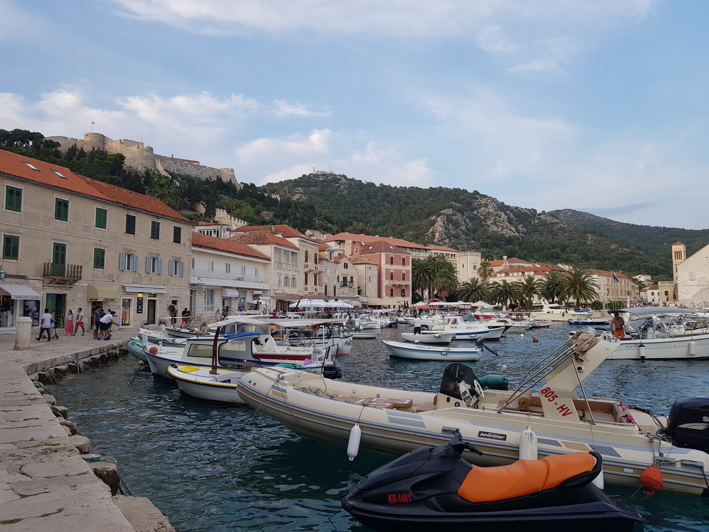

Malta
Malta is an archipelago in the central Mediterranean between Sicily and the North African coast. It's a nation known for historic sites related to a succession of rulers including the Romans, Moors, Knights of Saint John, French and British. It has numerous fortresses, megalithic temples and the Ħal Saflieni Hypogeum, a subterranean complex of halls and burial chambers dating to circa 4000 B.C.